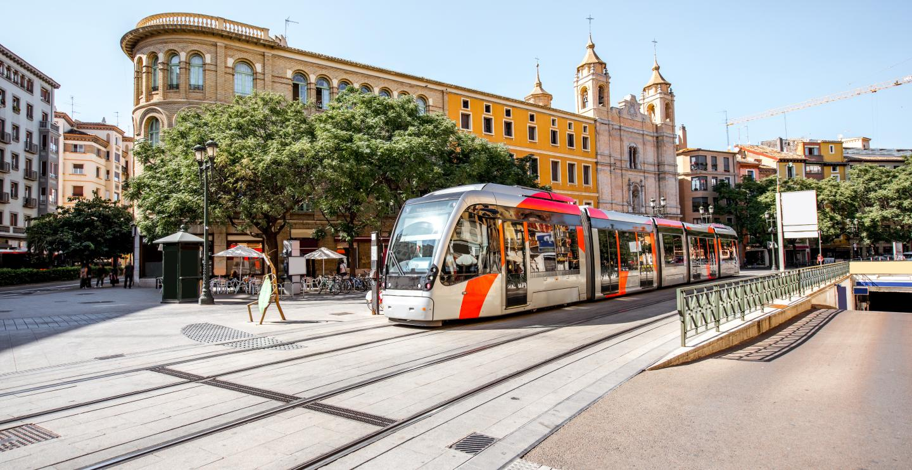

Discover Spain: A Land of Sun, Culture, and Flamenco Rhythms
Spain is a beautiful country in southwestern Europe, known for its sunny beaches, lively cities, and rich history. Famous landmarks like the Sagrada Familia in Barcelona and the Alhambra in Granada attract visitors from all over the world. Spain is also famous for its festivals, such as La Tomatina and Running of the Bulls, which show the country’s lively culture.
Spanish food is delicious and varied, from tapas and paella to churros and jamón. Music and dance are important too, with flamenco being one of the most famous traditions. Traveling in Spain is easy with its trains, buses, and local flights connecting cities, making it a perfect destination for culture, fun, and adventure.
Culture and Traditions
Spain has a rich culture that blends history, art, and music. Flamenco, with its passionate dance and guitar music, is a famous part of Spanish culture. People in Spain also enjoy festivals, like La Tomatina and Semana Santa, which show their lively and colorful traditions.
Family and food are very important in Spanish life. Tapas, paella, and local wines are often shared with friends and relatives. Traditional celebrations, such as bullfighting in some regions or regional folk dances, continue to play a big role in keeping Spain’s heritage alive.
Places to Visit
Spain is full of amazing places to explore. In Barcelona, you can see the famous Sagrada Familia and stroll along Las Ramblas. Madrid, the capital, is known for its grand palaces, museums, and lively squares like Plaza Mayor.
Other popular destinations include Seville, with its beautiful Alcázar palace and flamenco shows, and Granada, home to the stunning Alhambra. Spain also has sunny beaches in Costa del Sol and the Canary Islands, perfect for relaxing and enjoying the Mediterranean lifestyle.
Famous Places to Eat and Dine
Spain is famous for its delicious food, and cities like Barcelona and Madrid have many popular restaurants. La Boqueria Market in Barcelona is a must-visit, where you can taste fresh tapas, seafood, and local treats. In Madrid, Mercado de San Miguel is a favorite spot to enjoy traditional Spanish dishes in a lively atmosphere.
Other famous dining places include Seville, known for its tapas bars, and Valencia, where you can try authentic paella near the beach. Many restaurants in Spain combine great food with beautiful views, making dining not just a meal, but a full cultural experience.
Transportation

Spain has a well-connected transportation system that makes traveling easy. High-speed trains, called AVE, link major cities like Madrid, Barcelona, and Seville quickly and comfortably. Buses and metro systems are also available in most cities, helping people move around conveniently.
For longer trips, Spain has many airports with flights to Europe and beyond. Driving is also an option, with good highways and scenic routes across the country. Whether by train, bus, plane, or car, getting around Spain is simple and efficient.
Travel Tips
Here’s a list of useful tips for traveling in Spain:
Learn basic Spanish phrases – Simple greetings and phrases make interactions easier.
Plan for siesta hours – Many shops close in the afternoon for a short rest.
Carry cash – Small shops and markets may not accept cards.
Respect local customs – For example, dress modestly when visiting churches.
Explore beyond the cities – Spain has beautiful beaches, mountains, and small towns.
Famous Songs in Spain
Spanish songs are famous for their passionate rhythms and heartfelt lyrics. Here are some of the Spanish songs that are popular.
THE BEST OF GLOBETREK DELIVERED TO YOUR INBOX
Sign up for inspiring travel stories, guides, and cultural insights.